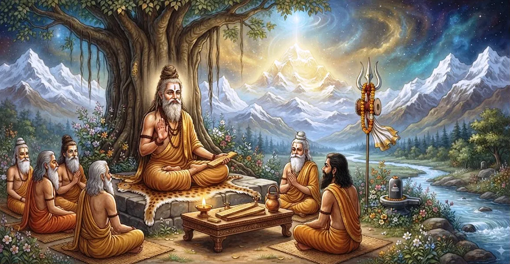

सूत जी का निर्देश
कैलाश संहिता का दसवां अध्याय ऋषि सुता के मार्गदर्शन में मानसिक पूजा और प्रणव ज्ञान की गहन शिक्षाओं को एक साथ लाता है।
ऋषि सुता एकत्रित ऋषियों को संबोधित करते हुए संक्षेप में बताते हैं कि गूढ़ वेदांत चिंतन को दैनिक नैतिक आचरण और अटूट भक्ति के साथ कैसे संरेखित होना चाहिए।
यह अध्याय साधकों के लिए उच्च आध्यात्मिक सत्यों को उनके आंतरिक और बाहरी जीवन में निर्बाध रूप से एकीकृत करने के लिए एक व्यापक मार्गदर्शिका के रूप में कार्य करता है।
अध्याय 10 की मुख्य बातें
ज्ञान का संश्लेषण
अनुष्ठान क्रिया, मानसिक ध्यान और उपनिषदिक ज्ञान को एक ही मार्ग में सुसंगत बनाता है।
सुता की प्रदर्शनी
नैमिषारण्य के ऋषियों द्वारा प्रस्तुत सूक्ष्म आध्यात्मिक शंकाओं का समाधान सूत ऋषि ने किया।
नैतिक अनुशासन
बोध के लिए आवश्यक शर्तों के रूप में आचरण की शुद्धता, सच्चाई और अनासक्ति पर जोर दिया जाता है।
निरंतर ध्यान
अभ्यासकर्ताओं को दैनिक कर्तव्यों के बीच शिव के बारे में सूक्ष्म जागरूकता बनाए रखने का निर्देश देता है।
कर्म का नाश
यह बताता है कि कैसे इन निर्देशों के अनुसार जीवन जीने से पिछले कर्म संस्कार नष्ट हो जाते हैं।
स्वतंत्रता का प्रवेश द्वार
आगामी अध्यायों में मुक्त संतों के अनुकरणीय जीवन की खोज का मार्ग प्रशस्त करता है।
इस अध्याय में मुख्य विषय
सूत ऋषि का ऋषियों को सम्बोधित करना
ऋषि सूता प्रेमपूर्वक संतों को संबोधित करते हैं, इस बात पर जोर देते हैं कि सच्चा ज्ञान विनम्रता, समर्पित पूछताछ और अनुग्रह के माध्यम से प्राप्त होता है।
वह उन्हें याद दिलाते हैं कि सभी बाहरी अनुष्ठानों की अंतिम पूर्ति भगवान शिव की मौन अनुभूति में होती है।
बाह्य संस्कार एवं आंतरिक साधना का एकीकरण
सुता बताते हैं कि शारीरिक पूजा और आंतरिक मानसिक ध्यान को परस्पर विरोधी नहीं, बल्कि पूरक चरणों के रूप में देखा जाना चाहिए।
बाह्य अनुष्ठान शरीर को अनुशासित करते हैं, जबकि मानसिक पूजा बुद्धि को शुद्ध करती है, जिससे भक्त सहजता से अद्वैत ज्ञान की ओर अग्रसर होता है।
एक शिव भक्त की नैतिक नींव
ऋषि सुता इस बात पर ज़ोर देते हैं कि नैतिक अखंडता की नींव के बिना आध्यात्मिक प्राप्ति असंभव है।
सच्चाई, सभी प्राणियों के प्रति करुणा, आत्म-संयम और द्वेष से मुक्ति को एक सच्चे शिवभक्त के आवश्यक गुणों के रूप में उजागर किया गया है।
सूत जी के उपदेश का महिमामय फल
जो लोग ईमानदारी से सुता के निर्देशों को सुनते हैं, उन पर विचार करते हैं और उन्हें लागू करते हैं वे गंभीर कर्म बाधाओं पर विजय प्राप्त करते हैं।
मन अटूट स्थिरता प्राप्त करता है, जीवन में आंतरिक शांति और मृत्यु पर परम मुक्ति (मुक्ति) प्रदान करता है।
महादेव के प्रति निरंतर जागरूकता में रहना
अध्याय का समापन भक्तों को पूरे ब्रह्मांड को शिव की जीवित अभिव्यक्ति के रूप में देखने के लिए प्रोत्साहित करते हुए होता है।
जब हर कार्य एक प्रसाद बन जाता है और हर सांस प्रार्थना बन जाती है, तो जीवन स्वयं एक निरंतर तीर्थयात्रा में बदल जाता है।
अध्याय 11 की ओर
अध्याय 10 में अपना सामान्य निर्देश देने के बाद, ऋषि सुता ने अध्याय 11, 'ब्राह्मण वामदेव का वर्णन' का परिचय दिया।
अध्याय 11 में ऋषि वामदेव के जीवन, असाधारण अनुभूतियों और अद्वैत ज्ञान का विवरण दिया गया है, जिसमें बताया गया है कि ये शिक्षाएँ एक मुक्त गुरु में कैसे प्रकट होती हैं।
अध्याय 10 की मुख्य शिक्षाएँ
समग्र पथ
आध्यात्मिक विकास के लिए अनुष्ठान, ध्यान, नैतिकता और अद्वैत ज्ञान के मिश्रण की आवश्यकता होती है।
मन की पवित्रता
आंतरिक अनुभूति के लिए नैतिक ईमानदारी और सच्चाई अपरिहार्य है।
सतत स्मरण
मौन प्रणव अभ्यास बनाए रखने से सामान्य क्रियाएं ईश्वरीय पूजा में बदल जाती हैं।
सभी पर दया
प्रत्येक प्राणी में भगवान शिव को देखने से सार्वभौमिक दयालुता और शांति को बढ़ावा मिलता है।
कर्म विच्छेद
कर्मों के सभी फल महादेव को समर्पित करने से पिछले कर्म बंधन नष्ट हो जाते हैं।
जीवित मुक्ति
सुता के वचनों को हृदयंगम करने से जीवन में अटल शांति और मुक्ति मिलती है।
आध्यात्मिक चिंतन
शिक्षण केवल अवधारणाओं को प्रसारित करना नहीं है, बल्कि श्रोता के भीतर सुप्त देवत्व को जागृत करना है। ऋषि सुता हमें याद दिलाते हैं कि सच्ची भक्ति न केवल पूजा के दौरान हम जो करते हैं उसे बदल देती है, बल्कि हम अपने जीवन के हर पल को कैसे जीते हैं, उसे भी बदल देती है।
अध्याय 10 का संदेश जीना
दैनिक दिनचर्या को आध्यात्मिक सिद्धांतों के साथ संरेखित करें, सभी बातचीत में ईमानदारी और दयालुता का अभ्यास करें।
अपने हृदय को चिंता और लालच से मुक्त करते हुए, अपने दैनिक श्रम का फल शिव को अर्पित करें।
गहरी विनम्रता और स्थिर इरादे के साथ पवित्र शिक्षाओं को नियमित रूप से सुनें और अध्ययन करें।
प्रमुख आध्यात्मिक अवधारणाएँ
मुक्ति के मूल मार्ग को स्पष्ट करने के लिए ऋषि सुता द्वारा दिए गए पवित्र सारांश निर्देश।
क्रिया, भक्ति, ध्यान और ज्ञान का सामंजस्यपूर्ण एकीकरण।
दैनिक जीवन में धर्म, सत्य और नैतिक कर्तव्यों के प्रति अटूट प्रतिबद्धता।
निःस्वार्थ कर्म और भक्ति के माध्यम से पिछले कर्मों के संस्कारों को धीरे-धीरे जलाना।
सत्य, पवित्र धर्मग्रंथों और पवित्र संगति से जुड़ाव जो चेतना को ऊपर उठाता है।
हर जगह और हर व्यक्ति में भगवान शिव की उपस्थिति को पहचानने की निरंतर मानसिकता।
अध्याय सारांश
कैलाश संहिता अध्याय 10 सूत का निर्देश प्रस्तुत करता है। सैद्धांतिक दर्शन और व्यावहारिक आध्यात्मिकता के बीच एक महत्वपूर्ण पुल के रूप में कार्य करते हुए, ऋषि सुता ने संक्षेप में बताया कि कैसे अनुष्ठान पूजा, मानसिक ध्यान और प्रणव चिंतन नैतिक अखंडता और निस्वार्थ भक्ति में निहित होना चाहिए। यह संश्लेषण कर्म संबंधी बाधाओं को दूर करता है, आंतरिक मानसिक शांति प्रदान करता है, और पाठक को अध्याय 11, 'ब्राह्मण वामदेव का वर्णन' के लिए सहजता से तैयार करता है।
अक्सर पूछे जाने वाले प्रश्न
1. कैलास संहिता अध्याय 10 का प्राथमिक विषय क्या है?
अध्याय 10 में ऋषि सुता को सारांश ज्ञान प्रदान करते हुए दिखाया गया है, जिसमें इस बात पर जोर दिया गया है कि आध्यात्मिक ज्ञान, भक्ति और नैतिक अनुशासन कैसे प्राप्ति के लिए एक साथ काम करते हैं।
2. इस अध्याय में ऋषि सुता की क्या भूमिका है?
ऋषि सुता प्रबुद्ध कथावाचक और उपदेशक के रूप में कार्य करते हैं, ऋषियों के संदेह को स्पष्ट करते हैं और शिव-केंद्रित जीवन जीने के लिए व्यावहारिक नियम प्रदान करते हैं।
3. सूता आंतरिक पूजा को दैनिक आचरण से कैसे जोड़ते हैं?
सूता बताते हैं कि पूर्ण आध्यात्मिक फल प्राप्त करने के लिए मानसिक पूजा और प्रणव ध्यान को सत्यता, आत्म-नियंत्रण और दयालु जीवन का समर्थन करना चाहिए।
4. सूत जी के उपदेश सुनने से क्या फल मिलता है?
इन उपदेशों को सुनने और हृदयंगम करने से संचित पाप नष्ट हो जाते हैं, मानसिक अशांति शांत हो जाती है और शाश्वत मुक्ति (मुक्ति) का द्वार खुल जाता है।
5. अध्याय 10 अध्याय 11 में कैसे परिवर्तित होता है?
अध्याय 10 में अपना मूल निर्देश पूरा करने के बाद, ऋषि सुता ने एक अनुकरणीय ऋषि के माध्यम से इन सर्वोच्च सिद्धांतों को चित्रित करने के लिए अध्याय 11 ('ब्राह्मण वामदेव का विवरण') का परिचय दिया।
6. सुता के निर्देश प्राप्त करने के लिए कौन योग्य है?
सभी विनम्र, वफादार साधक जो भगवान शिव के प्रति सच्ची भक्ति रखते हैं और सांसारिक बंधन से मुक्ति चाहते हैं, इन शिक्षाओं को सुनने और अभ्यास करने के पात्र हैं।
"ज्ञान तभी चमकता है जब नैतिक अखंडता में निहित होता है, और भक्ति तब चरम पर होती है जब जीवन स्वयं शिव बन जाता है।"
कैलाश संहिता के माध्यम से जारी रखें
अध्याय 10 में सुता के निर्देश का विवरण दिया गया है। अध्याय 11 को जारी रखें, ब्राह्मण वामदेव का वर्णन।